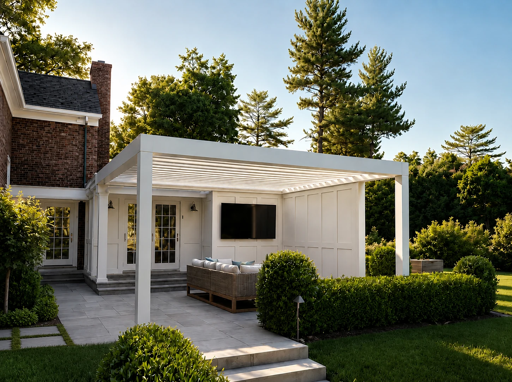
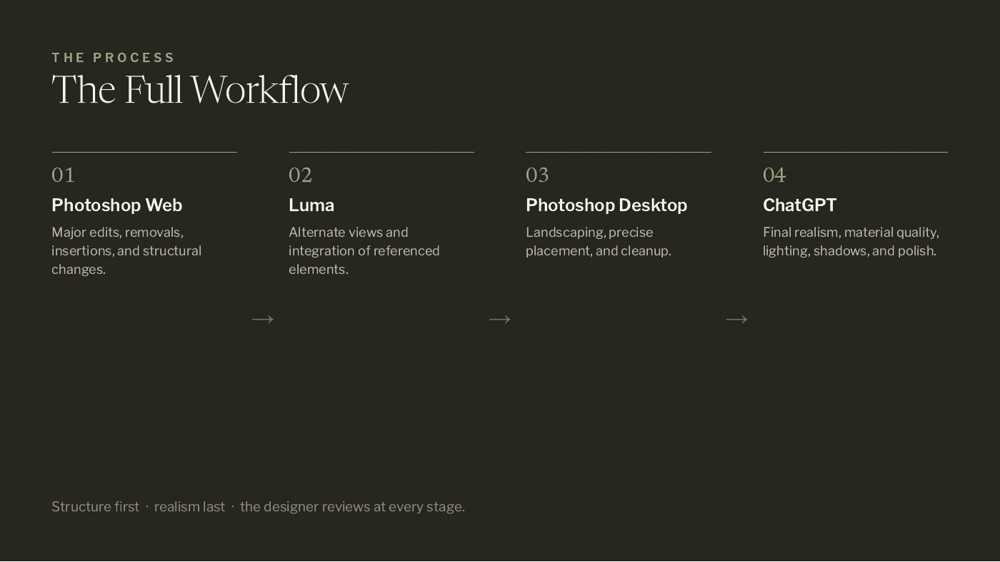

The Laurel Group
Read the plan.
Make the proposal visible.
- Year
- 2026
- Role
- Creative Design Intern
- Focus
- Plans · Proposals · Visualization
- Tools
- Photoshop · Luma · ChatGPT

From design information
to a visual conversation.
As a Creative Design Intern at The Laurel Group, I worked on landscape visualizations and the process behind them: interpreting supplied plans, analyzing proposal details, developing concept images, and comparing alternatives.
Each project below follows the information behind the image. Site photographs establish context, plans and specifications explain the intent, and focused visual studies make the proposed changes easier to discuss.
My role: interpretation and visualization. Landscape design direction, plans, and supplied site references: The Laurel Group design team. Renderings are AI-assisted concept studies.

Poolside Terrace
Proposal dimensions → terrace details → revised views

Layered Arrival
Site context → planting plan → layered landscape
Garden dining
Site and CAD references → outdoor gathering spaces

Pergola terrace
Supplied layout → structure, seating, and planting

Entry materials
Site and walkway plan → brick and stone comparisons
A repeatable process.
Room for review.
The internship documentation connects image preparation, compositing, refinement, and review. A plant-image catalog and written walkthroughs support consistency across projects. The purpose is to keep the supplied design information connected to the image at every stage.
01Understand
Read the site, supplied plans, and relevant proposal details. Identify what the image needs to explain.
02Develop
Compose planting, structures, and materials in Photoshop, using AI tools to explore and refine the scene.
03Review
Compare the image with the intended design. Use annotations and focused views to make the next change clear.

